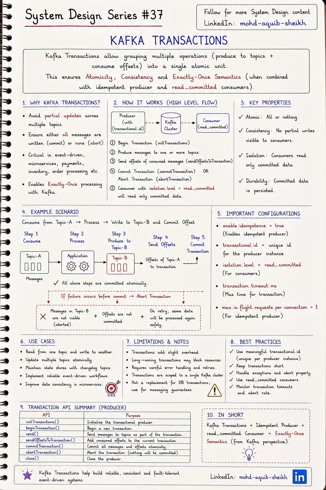
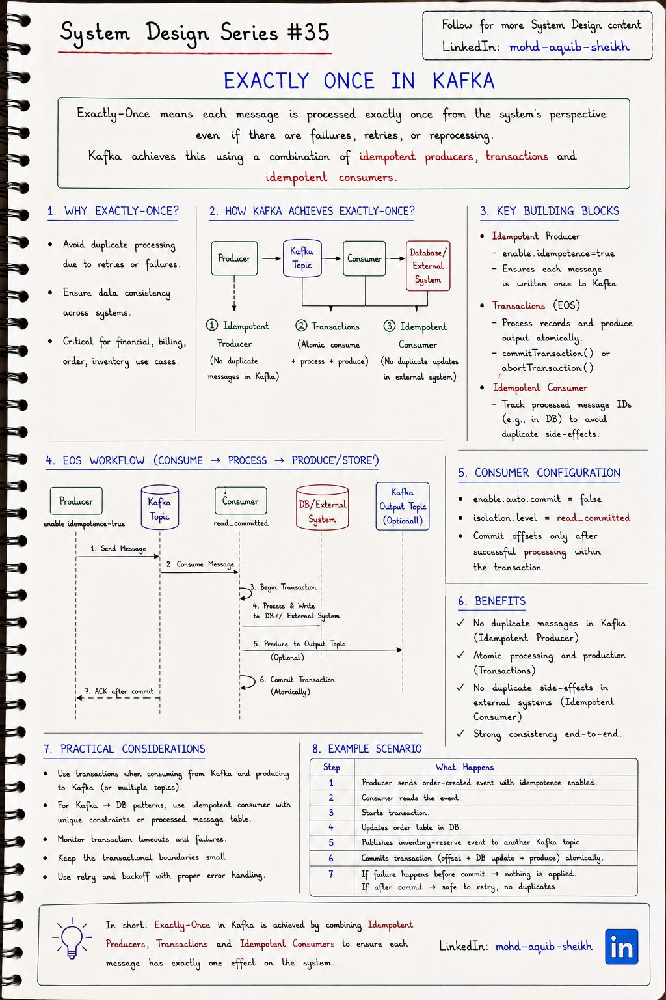
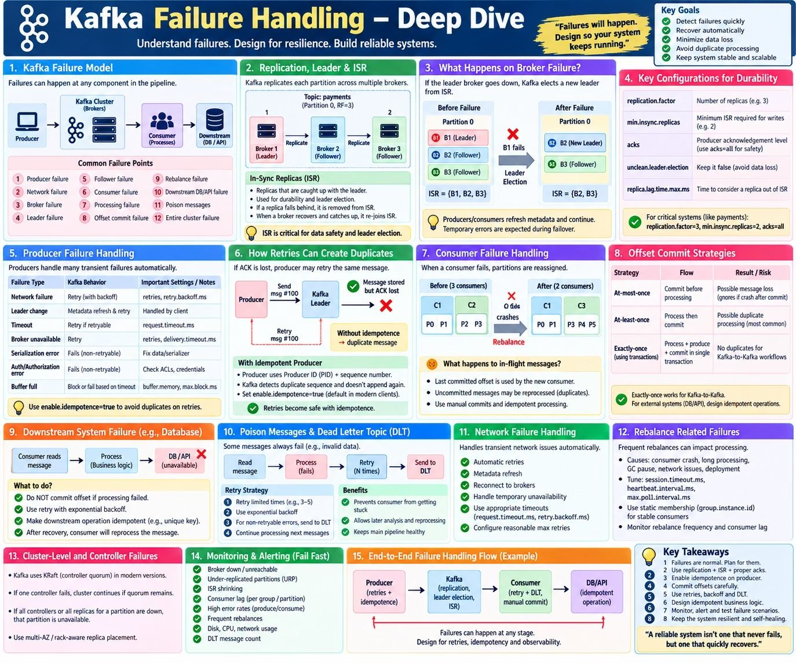
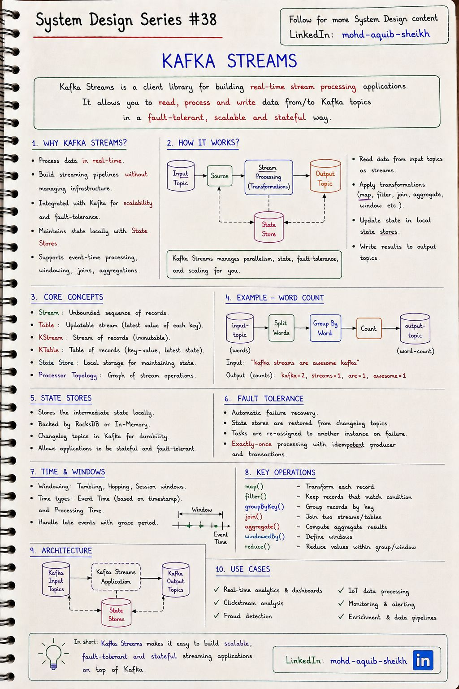

Kafka: гарантии и отказы
Что на самом деле означает «exactly-once», где проходит граница этой гарантии, как система должна вести себя при отказе каждого звена — от продюсера до базы данных — и как Kafka Streams собирает всё это в библиотеку потоковой обработки.
| Гарантия | Порядок действий потребителя | Риск |
|---|---|---|
| At-most-once | Зафиксировать смещение → обработать | Сбой после фиксации — сообщение потеряно |
| At-least-once | Обработать → зафиксировать смещение | Сбой после обработки — сообщение обработано повторно |
| Exactly-once | Обработка и фиксация смещения — одно атомарное действие | Доступно только там, где такая атомарность возможна |
14.1Транзакции Kafka#37
Транзакция объединяет запись в несколько топиков и фиксацию смещений потребителя в одно действие: либо всё становится видимым, либо ничего. Это решает задачу «прочитал из топика A, обработал, записал в топик B» без дубликатов и потерь.


producer.initTransactions(); // один раз: регистрация transactional.id
while (running) {
ConsumerRecords<String, String> records = consumer.poll(Duration.ofMillis(500));
producer.beginTransaction();
try {
for (var r : records)
producer.send(new ProducerRecord<>("topic-b", r.key(), process(r.value())));
producer.sendOffsetsToTransaction(offsetsOf(records), consumer.groupMetadata());
producer.commitTransaction(); // записи в topic-b и смещения topic-a — атомарно
} catch (KafkaException e) {
producer.abortTransaction(); // ничего не видно, смещения не сдвинуты — пакет будет прочитан снова
}
}
| Настройка | Сторона | Роль |
|---|---|---|
transactional.id | продюсер | Постоянный идентификатор экземпляра. Включает транзакции и защиту от «зомби» |
enable.idempotence=true | продюсер | Обязательное основание транзакций |
isolation.level=read_committed | потребитель | Не показывать записи незавершённых и отменённых транзакций |
enable.auto.commit=false | потребитель | Смещения фиксирует транзакция, а не потребитель |
transaction.timeout.ms | продюсер | Брокер сам отменит транзакцию, зависшую дольше этого времени |
- Записи отменённой транзакции физически остаются в журнале. Их скрывают специальные маркеры commit/abort. Потребитель с
read_committedих пропускает, а с уровнем по умолчанию (read_uncommitted) — видит. Транзакции на стороне продюсера бесполезны без правильной настройки читателя. - Защита от «зомби». Экземпляр завис, его сочли мёртвым и запустили замену с тем же
transactional.id. Новый экземпляр приinitTransactions()получает следующую «эпоху»; старый, очнувшись, получитProducerFencedExceptionи не сможет ничего записать. - Цена. Потребитель
read_committedчитает только до первой незавершённой транзакции — долгая транзакция задерживает всех читателей партиции. Отсюда совет конспекта «keep transactions short».
Уточнение. Строка max.in.flight.requests.per.connection = 1 на конспекте — устаревшее требование: идемпотентный продюсер сохраняет порядок при значении до 5 (это и есть значение по умолчанию).
14.2Exactly-once#35
«Ровно один раз» складывается из трёх частей: идемпотентный продюсер исключает дубликаты при записи в Kafka, транзакции делают чтение-обработку-запись атомарными, идемпотентный потребитель исключает повторные побочные эффекты во внешних системах.


- Зафиксировали базу, упали до коммита Kafka → сообщение будет прочитано снова, база обновится повторно.
- Зафиксировали Kafka, упали до коммита базы → изменение в базе потеряно, а событие дальше уже отправлено.
| Поток | Как получить «эффективно один раз» |
|---|---|
| Kafka → Kafka | Транзакции Kafka (или Kafka Streams с exactly_once_v2). Единственный случай настоящей exactly-once средствами платформы |
| Kafka → база данных | At-least-once + идемпотентный потребитель: таблица обработанных событий в одной транзакции БД с бизнес-изменением (тема 13). Вариант — хранить смещение в той же базе и той же транзакции |
| База данных → Kafka | Transactional outbox: событие записывается в таблицу outbox в одной транзакции с бизнес-данными, отдельный процесс (опрос или CDC — Debezium) публикует его в Kafka. Потребители должны быть идемпотентными |
| Kafka → внешний API | Ключ идемпотентности в запросе (тема 04), если API его поддерживает. Иначе гарантии нет |
orderRepository.save(order); // коммит в БД
kafkaTemplate.send("orders", event); // а если здесь сбой? Заказ есть, события нет — и никто не узнает
@Transactional не помогает: Kafka не участвует в транзакции базы. Правильное решение — outbox.
14.3Обработка отказовдоп.
Сводная схема: что может сломаться на пути «продюсер → кластер → потребитель → внешняя система» и что с этим делать. Она связывает темы 12–14 в единую картину — удобна для повторения перед собеседованием.


| Что отказало | Что происходит | Как защищаться |
|---|---|---|
| Сеть, смена лидера (продюсер) | Временная ошибка отправки | Автоматические повторы с паузой: retries, retry.backoff.ms, общий предел delivery.timeout.ms |
| Потеря подтверждения | Повтор создаёт дубликат | enable.idempotence=true |
| Ошибка сериализации, авторизации | Повтор бессмыслен | Не повторять; исправлять данные, права |
| Брокер с лидером | Выборы нового лидера из ISR | RF = 3, min.insync.replicas = 2, acks=all (тема 12) |
| Потребитель | Перебалансировка; новый владелец начинает с последнего зафиксированного смещения | Ручная фиксация после обработки + идемпотентность (тема 13) |
| База или API за потребителем | Обработка невозможна | Не фиксировать смещение, повторять с растущей паузой, после восстановления дочитать |
| «Ядовитое» сообщение | Падает при каждой попытке, блокирует партицию | Ограниченные повторы → Dead Letter Topic |
| Контроллер | Кворум KRaft выбирает нового | 3 или 5 контроллеров, размещение по зонам |
Повторы и Dead Letter Topic
Ключевое различие — временная ошибка (база недоступна, таймаут) и постоянная (невалидные данные, ошибка в коде). Первую лечит ожидание, вторую — нет: её повторы только блокируют партицию.
Блокирующие повторы
- Потребитель повторяет ту же запись, не двигаясь дальше.
- Порядок сохраняется.
- Партиция стоит всё время повторов.
- Подходят, когда недоступна зависимость: остальные записи всё равно бы не обработались.
Неблокирующие повторы
- Запись перекладывается в retry-топик с задержкой, основная обработка идёт дальше.
- Партиция не блокируется.
- Порядок по ключу нарушается.
- Подходят, когда проблема в отдельной записи.
После исчерпания попыток запись уходит в DLT вместе с причиной ошибки в заголовках. DLT — не корзина: на рост числа записей в нём нужен алерт, а для разбора и повторной отправки — процедура. В Spring Kafka: DefaultErrorHandler + DeadLetterPublishingRecoverer для блокирующих повторов, @RetryableTopic — для неблокирующих.
14.4Kafka Streams#38
Kafka Streams — библиотека для Java, превращающая обычное приложение в потоковый обработчик: читает топики, преобразует, соединяет, агрегирует и пишет результат в другие топики. Отдельный кластер обработки не нужен — масштабирование, состояние и отказоустойчивость обеспечиваются самой Kafka.


| Абстракция | Что представляет | Пример |
|---|---|---|
| KStream | Поток независимых событий: каждая запись — факт | Клики, платежи, показания датчика |
| KTable | Таблица текущих значений: новая запись с тем же ключом заменяет старую | Профиль пользователя, остаток на складе |
| GlobalKTable | Таблица, целиком загруженная на каждый экземпляр | Небольшой справочник для обогащения |
Двойственность потока и таблицы. Таблица — это свёрнутый поток изменений; поток — это журнал изменений таблицы. Из потока событий «+5, −2, +10» получается таблица «баланс = 13», а из изменений таблицы — снова поток. На этом построены и агрегации, и восстановление состояния.
KStream<String, String> lines = builder.stream("input-topic");
lines.flatMapValues(line -> Arrays.asList(line.toLowerCase().split("\\s+")))
.groupBy((key, word) -> word) // смена ключа => автоматический repartition-топик
.count() // состояние в локальном хранилище + changelog-топик
.toStream()
.to("output-topic", Produced.with(Serdes.String(), Serdes.Long()));
num.standby.replicas).
- Параллелизм — снова партиции. Каждая входная партиция обрабатывается отдельной задачей; экземпляры приложения делят задачи как обычная группа потребителей.
- Время события и время обработки. Окна (tumbling — непересекающиеся, hopping — с перекрытием, session — по паузам активности) считают по времени события из записи. Опоздавшие события принимаются в течение grace period; после него окно закрывается.
- Exactly-once одной настройкой:
processing.guarantee=exactly_once_v2— чтение, обновление состояния (через changelog) и запись результата объединяются в транзакцию Kafka. Работает потому, что всё остаётся внутри Kafka; вызов внешнего API из обработчика под эту гарантию не попадает.
Когда использовать: агрегаты и обогащение в реальном времени на Java, когда источник и приёмник — Kafka. Для SQL-подобных запросов без кода — ksqlDB; для тяжёлой аналитики, множества источников и очень большого состояния — Apache Flink.
14.5Интерактив: потеряется или задвоится
processing.guarantee=exactly_once_v2). Как только в обработке появляется внешний эффект — запись в базу, HTTP-вызов, письмо — гарантия заканчивается, и остаётся at-least-once плюс идемпотентность.14.6Самопроверка
Что даёт enable.idempotence = true у продюсера?
- Exactly-once во всей системе
- Повторная отправка при ретрае не создаёт дубль в партиции: брокер отбрасывает сообщения с уже виденным номером последовательности
- Шифрование
- Порядок между партициями
Сообщение невозможно обработать ни с какой попытки (ошибка в данных). Что делать?
- Повторять бесконечно
- Молча пропустить
- После ограниченного числа попыток отправить в dead letter topic с причиной и продолжить обработку партиции
- Остановить потребителя
Почему нельзя атомарно записать в базу данных и отправить сообщение в Kafka?
- Это две разные системы без общей транзакции; надёжное решение — outbox: событие пишется в таблицу в транзакции БД и доставляется в Kafka отдельным процессом
- Kafka не поддерживает запись
- Можно, достаточно @Transactional
- Мешает уровень изоляции
Продюсер использует транзакции, а потребитель видит записи отменённых транзакций. В чём дело?
У потребителя уровень изоляции по умолчанию — read_uncommitted. Записи отменённой транзакции физически находятся в журнале и скрываются только от читателей с isolation.level=read_committed.
Сервис читает из Kafka и обновляет PostgreSQL. Можно ли обеспечить exactly-once транзакциями Kafka?
Нет. Транзакция Kafka охватывает только записи в топики и смещения. Для базы данных нужна идемпотентность потребителя: таблица обработанных идентификаторов с уникальным ограничением в одной транзакции БД с изменением данных, либо хранение смещения в той же базе, либо естественно идемпотентные операции.
Что такое transactional outbox и какую проблему он решает?
Проблему двойной записи — невозможность атомарно изменить базу и отправить событие в брокер. Событие записывается в таблицу outbox той же транзакцией, что и бизнес-данные, поэтому они либо оба сохранены, либо оба нет. Отдельный процесс (опрос таблицы или CDC по журналу базы) публикует события в Kafka с гарантией at-least-once.
Сообщение с невалидным JSON попало в топик. Что произойдёт с потребителем без обработки ошибок и как правильно?
Потребитель упадёт на десериализации, перезапустится, прочитает то же сообщение и упадёт снова — партиция заблокирована навсегда, отставание растёт. Правильно: обработчик ошибок десериализации, ограниченное число попыток и отправка записи в Dead Letter Topic с сохранением причины; обработка следующих записей продолжается.
Чем неблокирующие повторы через retry-топики опасны?
Они нарушают порядок: запись, ушедшая в retry-топик, будет обработана позже следующих записей с тем же ключом. Если событие «заказ оплачен» ждёт повтора, а «заказ отменён» уже обработано, итоговое состояние неверно. Для сущностей, чувствительных к порядку, нужны блокирующие повторы или проверка версии при обработке.
Как Kafka Streams восстанавливает состояние агрегации после падения экземпляра?
Локальное хранилище состояния (RocksDB) зеркалируется в changelog-топик. Задачи упавшего экземпляра переходят к другому, и он восстанавливает хранилище, проиграв changelog с начала (или с контрольной точки). Резервные реплики состояния сокращают время восстановления.